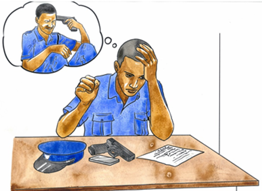

<!DOCTYPE html>
<html lang="en">
<head>
    <meta charset="UTF-8">
    <meta http-equiv="X-UA-Compatible" content="IE=edge">
    <meta name="viewport" content="width=device-width, initial-scale=1.0">
    <link rel="stylesheet" href="style.css">
    <title>police minds matter</title>
</head>
</html>
	<body>
		<div id="content-container" >
			<div id="page_landing_page_1_ek1"  >
				<div id="_bg__landing_page_1_ek2"  ></div>
				<div id="police_minds" >
					POLICE MINDS MATTER
				</div>
				
				

				<div id="cophat"  >
					
					<div id="p_m_m" >
						P.M.M
					</div>
				</div>
				
				<div id="line_1"  ></div>

				<div id="quick_info"  >
					<div id="line_2"  ></div>
					<div id="quick_info_ek1" >
						Quick Info
					</div>
					<div id="g_h_r_i_s">
						G.H.R.I.S 
					</div>
					<div id="kenya_police_sacco" ><a href="https://policesacco.com/"></a>
						Kenya Police Sacco
					</div>
					<div id="harambeesacco_society"> 
						Harambee Sacco Society
					</div>
					<div id="citizen" >
						eCitizen
					</div>
					<div id="hudumakenya" >
						Huduma Kenya
					</div>
					<div id="staff_mail" >
						KPS Staff Mail
					</div>

				</div>
				<div id="police_minds_ek1" >
					Police Minds Matter
				</div>

				<div id="intro"  >

					<div id="intro1"  >
						<div id="introbox"  ></div>

					</div>
					<div id="police_forum">
						Police minds matter is a forum created for the sensitization as an adaptation of Healing the uniform<br/>and Kumekucha for the Kenyan National Police Service (NPS) and other security actors.<br/>P.M.M</b>is an expansion of both for not only perceiving the cycles of violence, trauma, resilience and<br/>healing but also providing a networking and sharing community for individual officers in regards to<br/>their everyday life both outside and in the line of duty, where they can all air their concerns, share<br/>their stories under the sole quality of equity.
					</div>

				</div>

				<div id="introk2"  >

					<div id="introk3"  >
						<div id="intro_box_ek1"  ></div>

					</div>
					<div id="the_news_about_police_suicides" >
						The news about police suicides, attacks by police officers on colleagues and family members are on the rise within our Police force.  With their line of work being mostly dangerous and stressful, something that is considered  conventional within the work force, compared to other professions.<br/>Their lives are often endagered not to mention they respond to every suicide, every murder and every fatal or freak accident. Contestably, they are exposed to more death and trauma than even our armed forces.
					</div>

				</div>
				

				<div id="nav_bar"  >
					<div id="home_bar"  ></div>
					<div id="home" ><a href="#Home">home</a>
					</div>
					<div id="our_approach_bar"  ></div>
					<div id="our_approach" ><a href="#Our approach">Our approach</a>
					</div>
					<div id="our_programs_bar"  ></div>
					<div id="our_programs" ><a href="#Our partners">Our partners</a>
					</div>
					<div id="stories_bar"  ></div>
					<div id="stories" ><a href="#Stories">Stories</a>
					</div>
					<div id="our_team_bar"  ></div>
					<div id="our_team" ><a href="#Our Team">Our Team</a>
					</div>
					<div id="resources_bar"  ></div>
					<div id="resources" ><a href="#Resources">Resources</a>
					</div>
					<div id="gallery_bar"  ></div>
					<div id="gallery" ><a href="#Gallery">Gallery</a>
					
					</div>
					

				</div>

				<div id="desktop___5"  ></div>

					<div id="group_1"  >
						<div id="rectangle_4"  ></div>
						<div id="nps_signup" ><a href='https://google.com'>Google<a>
							NPS Signup
						</div>

					</div>

				</div>

			</div>


		</div>
	</body>
</html>